Sebelum melakukan pencatatan anda harus memahami terlebih dahulu persamaan akuntansi berikut :
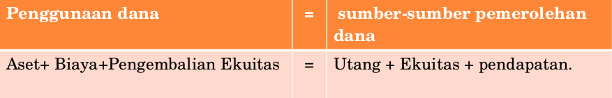Perubahan-perubahan keuangan akibat pengaruh terjadinya transaksi, dicatat sesuai dengan sifat (karakteristik) akun sebagai berikut:
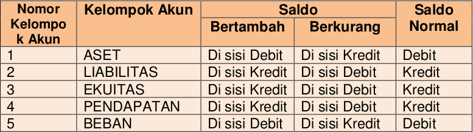Transaksi yang terjadi di perusahaan pada dasarnya terdiri dari transaksi pemerolehan dana dan transaksi penggunaan dana. Berdasarkan kedua jenis transaksi tersebut akan menyangkut pada perubahan aset, kewajiban atau ekuitas perusahaan. Berikut ini contoh serangkaian transaksi yang terjadi di perusahaan jasa service kendaraan “Jaya Makmur” selama bulan Oktober 2017 dengan neraca saldo awal periode sebagai berikut:
Adapun penjelasan tiap transaksinya:
Berdasarkan transaksi-transaksi tersebut berikut ini adalah jurnal umum secara keseluruhan adalah sebagai berikut,
Setelah jurnal umum disusun, langkah selanjutnya adalah melakukan posting atau pemindahbukuan (buku besar). Pada kegiatan pemindahbukuan buku besar yang harus disiapkan adalah sejumlah akun yang digunakan dalam transaksi jurnal umum atau bisa juga disiapkan sejumlah akun-akun yang digunakan oleh perusahaan selama satu periode.
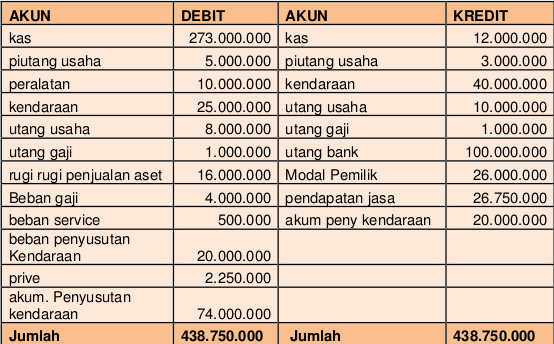Berikut ini adalah buku besar perusahaan Jaya Makmur untuk tahun 2017 berdasarkan rekapitulasi jurnal umum diatas:
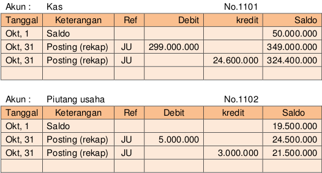 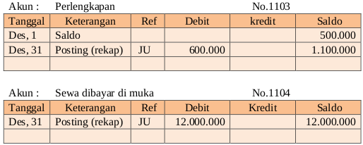 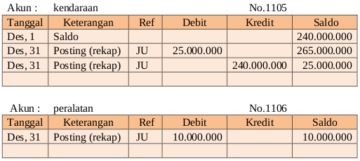 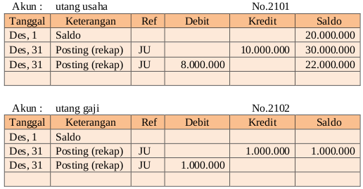 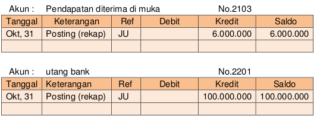 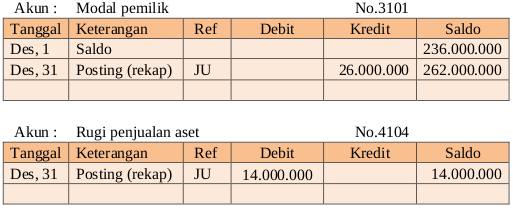 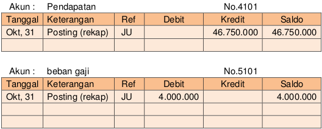 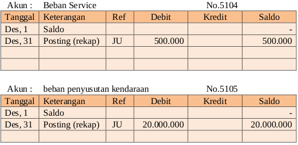 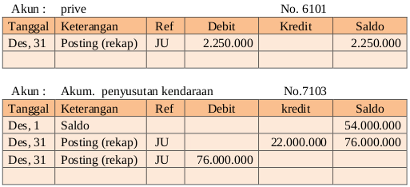 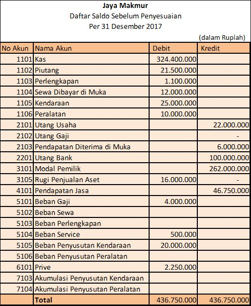